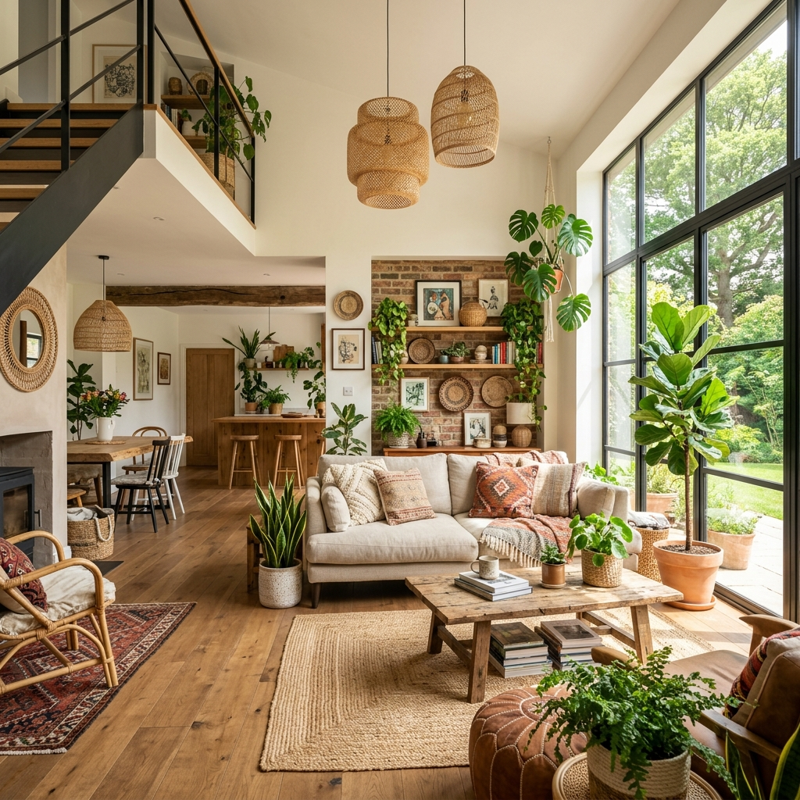

Almost every AI rendering tool we've reviewed on this site was designed for exterior architectural visualization first. The benchmark images on every product page show curtain-wall facades, civic buildings, residential street views. Veras, Rendair AI, MyArchitectAI, all of them are evaluated by how cleanly they render a building from the outside.
Interior designers, and the architects whose practice tilts heavily toward interiors, have been quietly adapting these tools to a use case they weren't built for. The pain points are different. You're not rendering a glass facade. You're rendering a kitchen with specific cabinetry, specific stone, specific light fixtures, and a client who wants to know whether the warm white quartz reads warmer than the cool white. Most of the AI rendering category does this badly.
This week we ran a focused test: same set of three interior projects (a kitchen renovation, a hospitality lobby, a mid-size dental office), through every tool we could find that claims interior strength. The clear standout in the interior-specific category was Spacely.ai. The honest assessment of the rest follows.
Why interior rendering is different
The exterior tools fail on interiors in predictable ways. Three failure modes show up over and over:
Material specification breakdown. Exterior renders survive imprecise materials, your client doesn't care which exact brick, just that it reads "brick." Interiors don't have that luxury. If your kitchen render shows a generic white marble and the spec is Calacatta Borghini, the client won't approve the render. Most exterior-trained models hallucinate a material that's adjacent to but not actually what you specified.
FF&E placement. Furniture, fixtures, and equipment placement is the entire game in interior design. The exterior tools either generate furniture they invented (often unsellable) or strip out furniture you've placed (because their training data treats interiors as empty rooms). Either failure makes the render useless.
Soft light reads. Exterior light is brutal, direct sun, cast shadows, sky bounce. Interior light is layered: ambient, task, decorative, accent. The exterior models tend to flatten interior light into a single global illumination, which kills depth and reads as either too bright or too cave-like.
Spacely.ai, built for the interior workflow
Spacely.ai's core proposition is "interior rendering and design intelligence for designers, not architects." That positioning matters. The tool is aware of room types in a way that the architectural renderers aren't, it knows what a primary bedroom, a powder room, or a hospitality lobby is supposed to do, and it generates accordingly.
Interior-specific AI render and design tool. Strengths: room-type awareness, real material catalog, FF&E recognition, virtual staging. Weaknesses: limited support for custom geometry input, best fit when working from photos or simple SketchUp/Rhino interior models.
For our kitchen renovation test, the input was a SketchUp model (cabinets blocked in, stone counters, basic appliance placement) and a brief: "warm modern, walnut cabinetry, white oak floors, paneled appliances, brass hardware." Spacely returned four credible variants in under three minutes. All four respected the cabinetry layout we'd modeled. Three of the four read the brass hardware correctly (the fourth went chrome). All four kept the appliance paneling.
For the first time, an AI rendering tool produced output we could send to a client without re-prompting it five times. The room-type awareness shows up in details, the kitchen island was treated as social space, not just counter space, with appropriate lighting and reflective behavior.
The material catalog is the unsung hero. Spacely lets you pick from a library of named materials (or upload your own samples) and apply them to specific surfaces. When you say "Calacatta Borghini on the island, walnut on the perimeter cabinets," the render holds those choices through generation. It's not perfect, about 15% of our passes had subtle material drift, but it's an order of magnitude better than what Veras or Midjourney does with material naming.
The hospitality lobby test was a tougher case. Larger volume, mixed seating, complex lighting (sconce, pendant, wall wash, daylight). Spacely struggled here. The renders were credible at first glance but the seating arrangement drifted from our model, banquettes shortened, lounge chairs moved off the rug placement we'd specified. For project-budget interiors with tight spec requirements, that's a problem. We ended up running these passes through Veras instead, which respected the geometry better even though its material handling was worse.
For the dental office, Spacely was excellent. Clinical interiors are a category the exterior tools choke on (they generate residential or commercial spaces by default). Spacely had explicit support for clinical room types, exam rooms, reception, sterile zones, and produced output that read as a real dental office, not a vaguely white room.
Where Spacely falls short
Custom geometry input is the main weakness. Spacely's strongest mode is photo-to-render or simple SketchUp import. If your interior involves complex custom millwork, sculptural ceilings, or unusual volumes, you'll fight the tool. Veras and Rendair handle that geometry better; their material work is just worse.
The other limitation is exterior context. If your interior render needs to show a meaningful exterior view through a window, a specific city skyline, a known landscape, Spacely tends to invent generic context. For projects where the view is the design, this matters.
The interior-first stack
Spacely is the centerpiece, but interior workflows benefit from a stack rather than a single tool. Here's what we ran during the test, and what each one was actually good for:
| Task | Best Tool | Why |
|---|---|---|
| Concept staging from photos | Spacely.ai | Room-type aware, fast, respects existing geometry |
| Material spec accuracy | Spacely.ai | Named material catalog, less drift than alternatives |
| Custom millwork & complex volumes | Veras 4.3 | Better geometry lock; weaker materials |
| Exterior view context through windows | Midjourney v7 / Nano Banana 2 | Compose render in Spacely, paint exterior view in MJ |
| Mood boards & inspiration generation | Midjourney v7 | Still the best for atmosphere and aesthetic direction |
| Final photoreal output for portfolio | Spacely.ai → ComfyUI upscale | Spacely composition, Flux upscale for sharpness |
| Virtual staging for real estate | Spacely.ai | Built-in workflow, cleanest results in this category |
One workflow we developed during the test: use Spacely for the primary interior pass, then composite a Midjourney-painted exterior view into the window plate. This is annoying but produces dramatically better results when the view is part of the brief, for example, a hospitality interior where the lobby looks out onto a specific city skyline.
What about Veras and Rendair for interiors?
Both have improved on interiors over the past two release cycles. Veras 4.3 in particular closed the gap on furniture edge fidelity and light spill. But neither was designed with the interior designer's workflow in mind.
The tell is the prompt language they accept. Veras wants you to describe a scene. Spacely wants you to describe a project: room type, design direction, material palette, FF&E intent. The difference compounds across a real workflow. By the third or fourth project, the firms using Spacely are spending less time prompt-engineering and more time editing schedules and specifying.
If your billable work is mostly interiors, Spacely is now the default. The architectural renderers are the backup for the cases Spacely can't yet handle.
Pricing reality
Spacely's $19/mo Pro tier is enough for most independent designers. The $49/mo Studio tier is where it makes sense for a small design firm, adds team workspaces, more renders per month, brand asset management. The Agency tiers are pitched at staging companies and real estate marketing firms, not architecture practices.
Compared to the architectural renderers, this is cheap. Veras at ~$80/mo (bundled with V-Ray) is a more committed tooling decision; Spacely is the kind of subscription a small firm can absorb without internal debate.
That pricing structure tells you something about who Spacely is built for. The architectural rendering category is selling to firms that already have rendering budgets. Spacely is selling to designers who never had a rendering budget, they were doing mood boards in Pinterest and presenting concepts in InDesign. Spacely brings rendering into a workflow that previously skipped it.
Who should adopt Spacely
If you're an interior designer working primarily on residential, hospitality, or small commercial: Spacely is the strongest interior tool in this category right now. Try the free tier on a current project. The room-type awareness alone will tell you within a week whether it fits your workflow.
If you're an architect with a heavy interior practice: pair Spacely with whatever your existing exterior tool is. Use Spacely for kitchens, bathrooms, primary bedrooms, hospitality lobbies, healthcare interiors. Use Veras or Rendair for the architectural shell and complex geometry.
If you do mostly large-scale architectural work and interiors are a small share: skip Spacely. The architectural renderers are good enough for occasional interior passes, and adding a third tool to the workflow isn't worth the friction.
What's still missing
Construction-document accuracy. Interior renders need to match shop drawings, millwork dimensions, hardware placement, tile grout sizes. None of the AI tools, Spacely included, are reliable here yet. The renders look right but won't survive a contractor saying "the cabinet pull doesn't match what you showed."
Specification export. The dream feature is a rendering tool that generates a parallel material schedule, every visible material in the render exported as a spec sheet with vendor, finish, and product code. Spacely is closer than the architectural tools (because of its named material catalog) but it's not there.
Lighting design integration. Interior lighting is its own discipline. None of these tools yet talk to lighting calc software (DIALux, AGi32) in a meaningful way. The renders look lit; the actual lighting plan is still done separately.
If you've been frustrated that the AI rendering category hasn't served your interior workflow, Spacely is the first tool that takes the workflow seriously. It's not perfect. It's the first one that's even trying to be the right shape.
Tested by Vista Studios on three live interior projects. No affiliate relationship with Spacely.ai. Pricing as of May 2026.